源宗寺/広島県呉市
港町呉、その休山の麓に広がる住宅地のさらに奥に源宗寺なる寺がある。
「昭和の奇僧」と呼ばれた稲田源宗坊という人がつくりあげた源宗坊印の脳内パラダイスなのだ。
どんなところかと一言で言えば俺好みの珍寺なのである。
麓の住宅地の狭い道を登っていくと人家も途切れ途切れになる。そしてその奥にいきなりこんなお方が現れる。
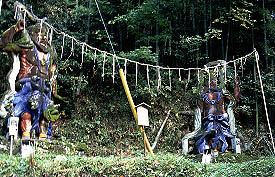 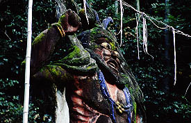
仁王像なのだろう。コンクリートの躯体に思いっきりの良いペイント。目を剥いたヤバめの表情がお判りいただけるだろうか。
ここが何だか知らない人が道に迷ったところでこれを見た瞬間ここから先には絶対行かないだろう。
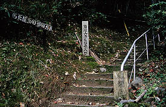
仁王像を過ぎると源宗坊への入口がある。
極楽道と銘打ってあるがあの仁王像を見ちゃった者としてはとてもこの先に極楽があるはずはないと確信しつつも別の意味でのマイ極楽浄土を求めて山道を登っていくのである。写真左上の英字表記が泣かせる。
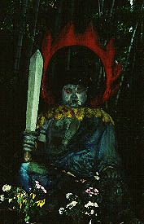
小さな川沿いの道を行くと、途中で行く手を塞ぐような勢いの不動像がお出迎え。後の炎が秀逸。
さらに登っていくと本堂が現れる。
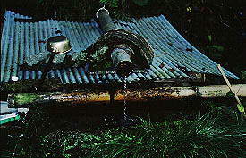
そしてその向かいには銘水らしき湧水がある。
で、その裏手にはこんな素晴らしい方々が
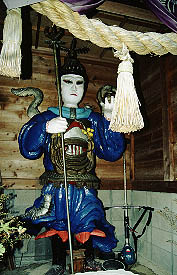
多門天なのだろうか素敵すぎるコスチューム、裾にムカデを従えて立っていまっす。
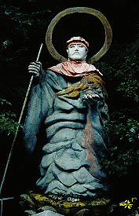
弘法大師像。衣の皺に並々ならぬ造形感覚が見え隠れ。
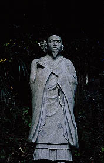
そしてこの素晴らしい23体もの彫刻を次々と製作した稲田源宗坊の像。
彼はこの地において修行し、薬草で人々を治療したという人物である。
かつては薬草園があり、周囲も行楽地として公園などが整備されていたようだが二度の水害に遭い現在は源宗坊印製作パワーの副産物である工具やコンクリート、その他のゴミなどが散乱しておりその面影すら無い。
そうこうしてさらに奥に進むといきなり巨大なモノが現れる。
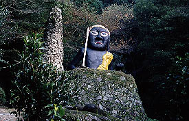 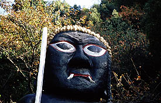
不動妙王だろう。黒い。デカい。上半身だけで4〜５メートルはあるかも。ここで一番の大作である。
コンクリ仏の魅力を最大限に引き出した傑作である。
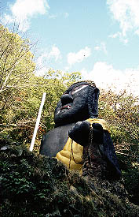
羂索の代わりに鉄の鎖。もうたまりません。
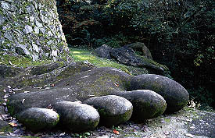 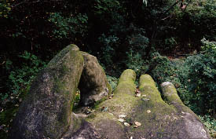
さらにブラック不動の台座下には巨大な足と掌が。こちらはコンクリートだけで着彩がなされていない。
未完成なのだろうか？それともこれで完成？立て看板があり、説明によると大きな手と足のみを見せる事によって大仏を想像しましょう、的な事が書いてあった。で大仏さんは黒不動の台座の中にいるんだって。ホントかよお〜。
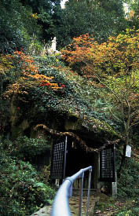 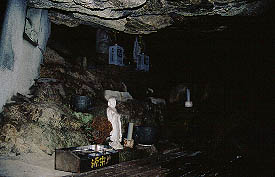
さらに進むと源宗坊が3年間木の芽木の根を食して修行したという洞窟。岩山の上には観音像が。
中はさして広く無いが岩壁に四角い窓までぶちぬくあたり流石である。
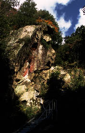 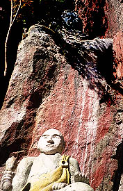
さて修行窟を過ぎると岩壁にぶち当たる。奥には小さな滝などがありかつてこの辺が行楽地として賑わっていたのもまんざら嘘でもないような雰囲気になる。でも、崖には源宗坊印の仏像が。しかも坊さんの上を見ていただきたい。
青い顔をした変な像がこちらを見ているではないか。ひえ〜こわー。
〜嗚呼、素晴らしき哉、コンクリ仏像の王国〜
2001.11.
珍寺大道場 HOME